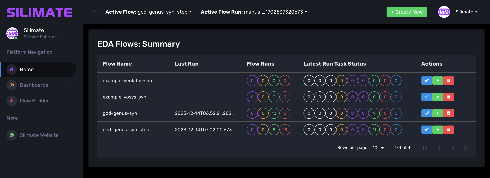
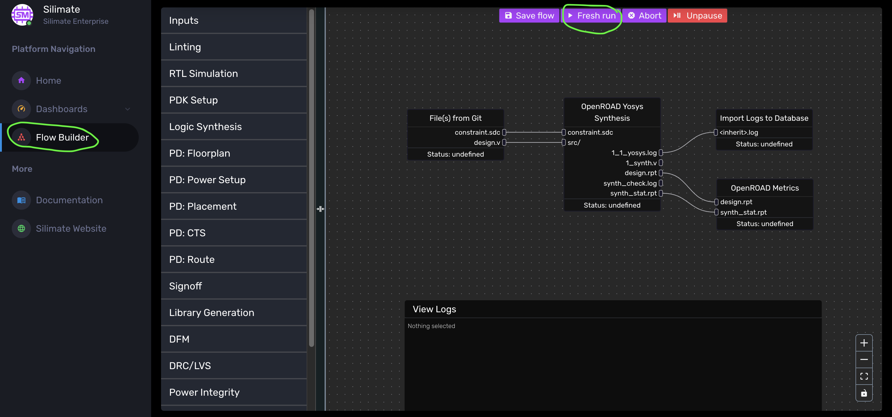
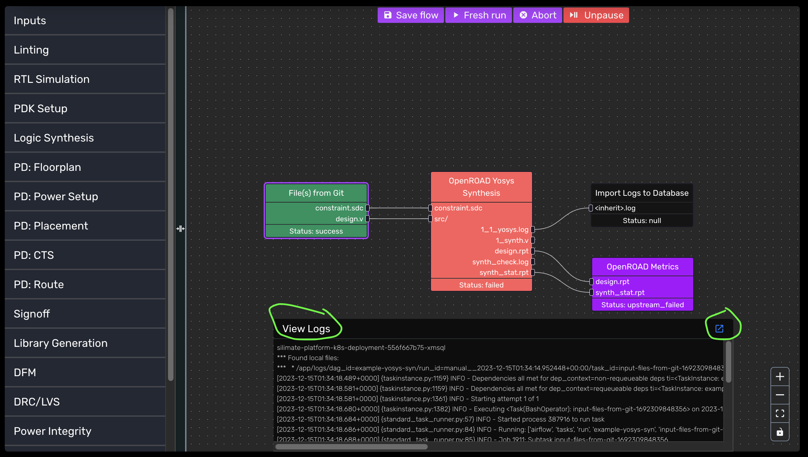

Flow Management
In this section, we will discuss how to manage and run existing flows on the Silimate Platform via the web interface. CLI flow management is discussed at CLI.
Terminology
Below are the most important terms to be aware of when using the platform:
- Flow: A directed acyclic graph (DAG) describing the set of steps that happen and the dependencies between them
- Flow Run: A particular execution of the flow, where each step is scheduled then executed
- Active Flow: The currently selected flow
- Active Flow Run: The currently selected flow run
- Step: A function or set of functions, typically within one tool, that needs to happen in a flow
- Task: A particular execution of a step
- Flow Builder: Page where you can build, run, and monitor flows
Home Page: Flow Summary

The home page yields a flow summary table, with the flow name, when the last run occurred, the status of all flow runs, and the status of all tasks. For each flow, there is also a set of three actions:
- Make flow active: change active flow to be set to flow name associated with row
- Trigger flow: kick off a new flow run
- Reset flow: delete all information on prior flow runs
If there are errors in any flows causing them to be deemed invalid by the scheduler, the errors will be displayed here.
NOTE: "Reset Flow" button does not delete the flow in question. To delete a flow, see Deleting a Flow.
Running a Flow
From the web interface, flows can be run in one of two ways:
- Trigger a flow run on home page
- Navigate to "Flow Builder" in the side bar and click "Fresh run" at the top

After running a flow, you can view each task and its dependencies/status in the "Flow Builder" page. Dependencies are shown as lines between outputs of one step and inputs of another. Steps without dependencies will run in parallel wherever possible.
When a flow is not running, little white dots will be visible on the flow builder panel. While running, these dots disappear.
Task Logs
Tasks typically run in a container. On the "Flow Builder" page, logs of a task from its container can be viewed by first clicking to select a task, then clicking the "View Logs" bar at the bottom. The blue button on the far right of the "View Logs" bar can be used to open the logs in a new window.

Task Statuses
- undefined: flow run has not been initiated
- null: flow run has been initiated, but task has not been scheduled yet
- scheduled: task's dependencies have been met and task has been scheduled to run, but task is not queued yet
- queued: task has been assigned to an execution slot and is awaiting a worker
- running: task is running
- success: task completed with non-error return code (caveat: might not have completed successfully!)
- failed: task completed with return code
- upstream_failed: one of the task's upstream dependencies did not complete successfully, so task will not run
Pausing a Flow
Flows can be paused by clicking the "Pause" button in the top panel of the flow builder.
Pausing a flow will not kill running tasks. It will not queue any new tasks; tasks will
remain in the null or scheduled state. Flows can be unpaused by clicking the button again.
Aborting a Flow
Aborting a flow will pause a flow and additionally mark any running/scheduled tasks as failed. This will effectively kill the flow run.
Getting the Results of a Flow Step
Each flow step produces output collateral. This output collateral is available on the CAD server at path /silimate/build/<flow_name>/<step_name>/outputs/.
This output collateral can also be downloaded as a .zip file by right-clicking on a step and clicking "Access Outputs."
Rerunning Flow Steps
To rerun a step, right-click on the step and click Run from the dropdown menu. You will have the option to rerun the up/downstream components in addition. You can also clear a flow step or mark it as failed. You can use "Mark as Failed" to "run up to" a certain step, by marking the steps after it as failed.
Adjusting the View
The view controls are in the bottom right corner. You can zoom in (+), zoom out (-), zoom to fit ([]), or lock the flow to prevent edits (lock button).